Romil Bhardwaj
I wrote a short utility using plt.ginput to annotate images. Here are the annotations of my face and the target - James May.
| 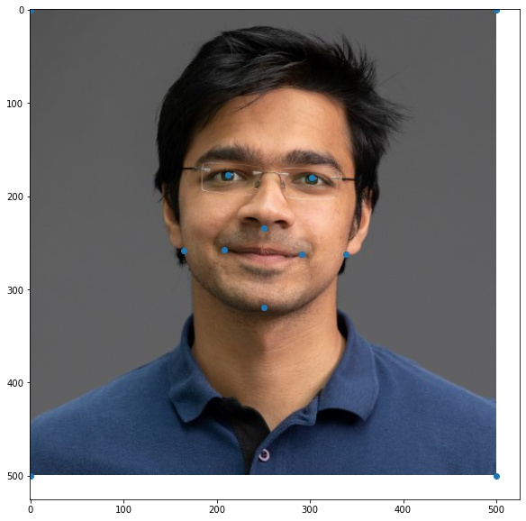 | 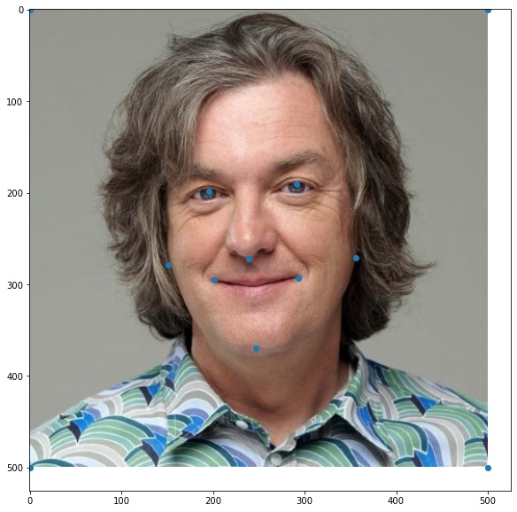 |
After computing the triangles, the midway face can be computed by setting the warp and dissolve fractions to 0.5 for the morph function. This ensures that both, the geometry and the appearance are mid-way through. Here's a old looking me:
By varying the dissolve fraction and the warp fraction from 0 to 1, we can create multiple frames for an animation which shows me morphing into captain slow. Here's a gif of the animation:
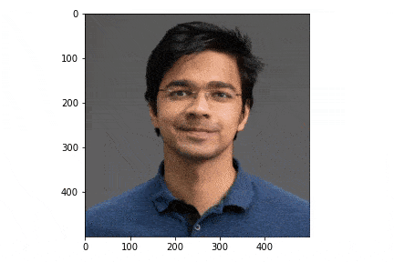Computing the mean face requires first aligning all faces using affine transforms using a fixed traingulation, and then averaging the pixels over all frames. This is the mean face I got. Creepy:
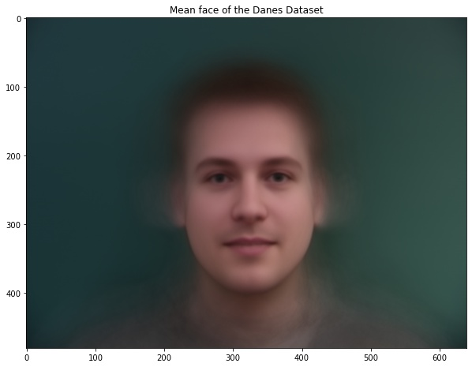Here's some faces from the dataset morphed into the average shape.
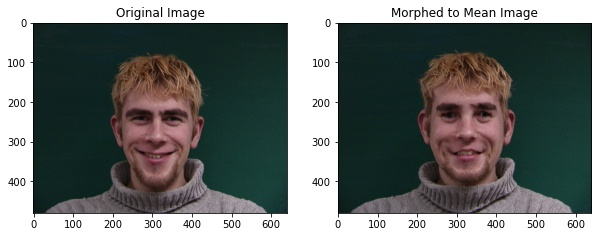 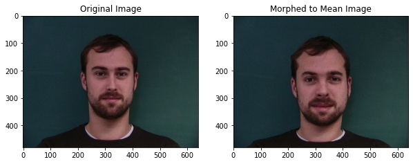 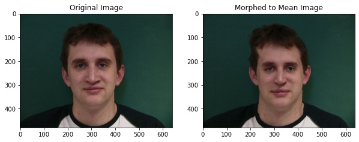 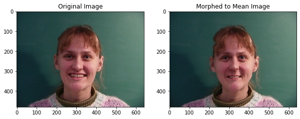To create a caricature of myself, I first computed top 4 of my keypoints that were the furthest from the population mean. I then exaggerated these keypoints by extrapolating them away from the mean value of those keypoints, thus highlighting those features. Here's the result
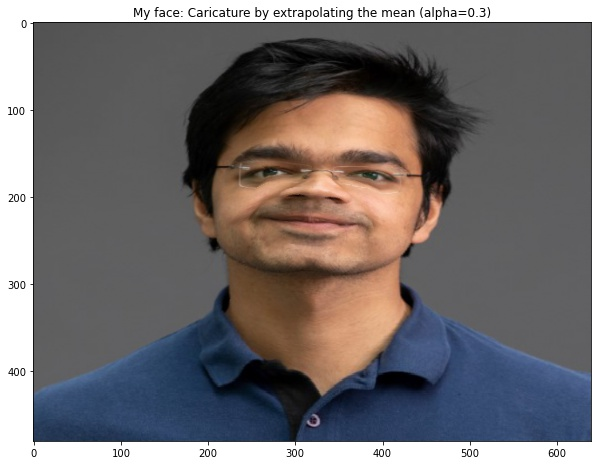I downloaded an average asian female face from the web and changed my face geometry and appearance to morph myself into an asian female.
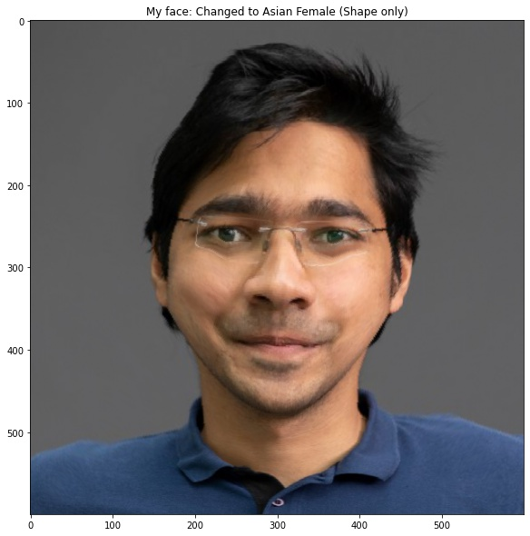 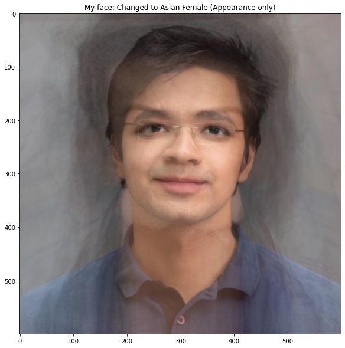 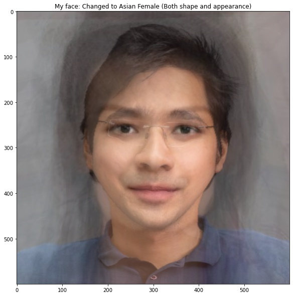